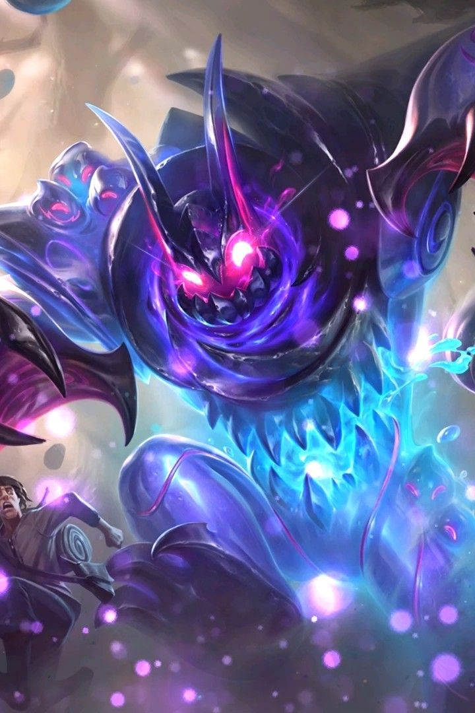
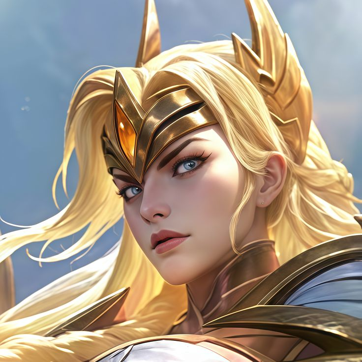
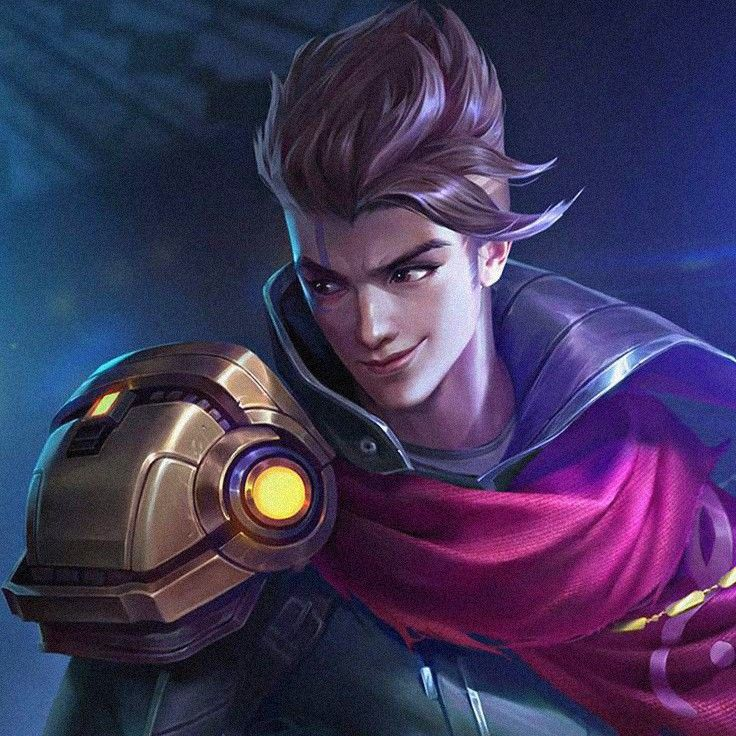
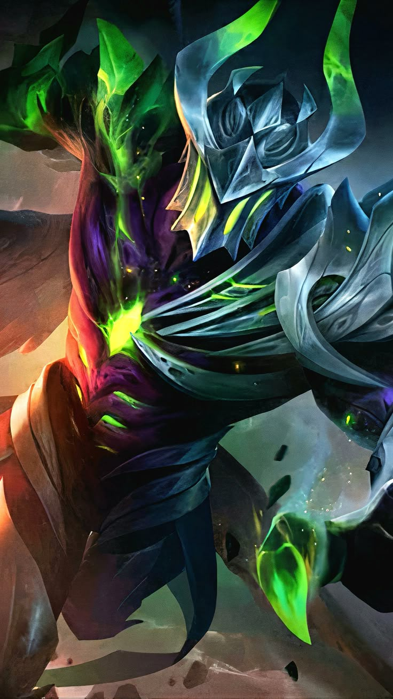
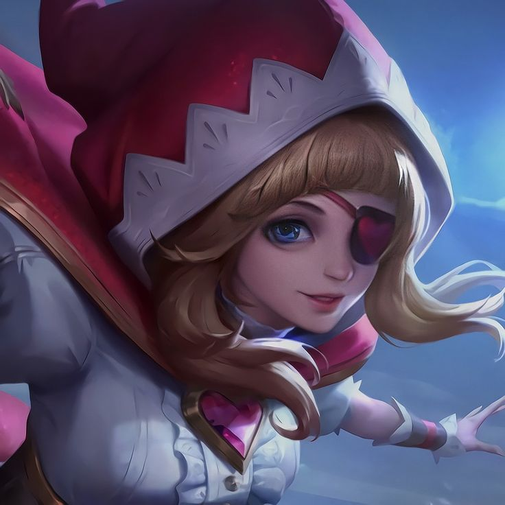
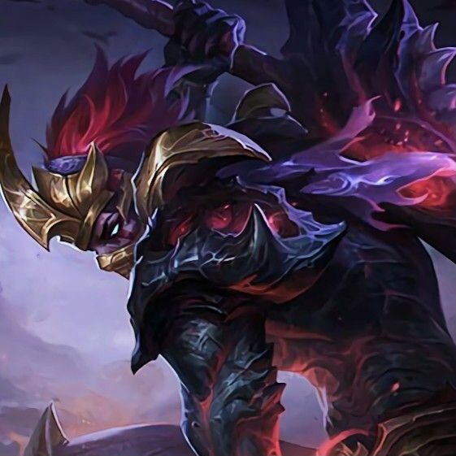

Lançada nesta season, Hirara é uma Assassina com alta mobilidade para entrar e sair dos combates rapidamente, sendo a primeira personagem a não possuir uma Ultimate, tendo apenas duas habilidades básicas que podem ser combinadas para combos.
Muito popular desde o lançamento, já aparece em boa parte das partidas ranqueadas.
Heróis Nerfados (enfraquecidos)
Heróis que tiveram poder reduzido na última atualização, para equilibrar o jogo.
Gloo (Tank)

Gloo — Tank
Tank: Tank Parudo, Causa Lentidão, Recupera Vida e sobe nas costas do inimigo para controlar seus movimentos e transferir dano a ele.
Alta dominância e controle reduzidos por estar forte demais no meta anterior.
Freya (Soldado)

Freya — Fighter
Fighter: Fighter, focada em ataque contínuo, escudos e velocidade.
Teve o alcance da sua segunda habilidade reduzido, além de uma duração menor e tempo de recarga mais longo em sua Ultimate.
Claude (Atirador)

Claude — Atirador
Papel: Atirador focado em extrema mobilidade, velocidade de ataque e dano em área.
Perdeu parte do seu potencial de explosão (burst) no início e meio de jogo com a sua Ultimate.
Heróis Buffados (fortalecidos)
Heróis que receberam melhorias na última atualização, ficando mais competitivos.
Argus (Soldado)

Argus — Soldado
Papel: Soldado crítico, que avança com ataques críticos rápidos e ativa imortalidade temporária que transforma o dano recebido em cura.
Recebeu uma grande reformulação em sua Ultimate, que agora ativa a imortalidade automaticamente ao sofrer um dano fatal, tornando-o muito mais viável e perigoso.
Ruby (Soldado/Tank)

Ruby — Tank
Tank: Tank Sustain, focada em controle de grupo e cura extrema.
Seu dano base e o dano da sua Ultimate aumentaram massivamente. O roubo de vida (spell vamp) inicial foi reduzido, mas agora escala e fica muito mais forte quanto menor estiver a vida dela.
Hanzo (Assassino)

Hanzo — Assassino
Papel: Assassino de invasão, engole monstros da selva instantaneamente e projeta sua alma fora do corpo para atacar os inimigos de longe com segurança.
Ganhou mais facilidade para roubar objetivos na selva.
Tier List Atual
Classificação dos heróis mais fortes da season, do mais forte (S) ao mais fraco (C).